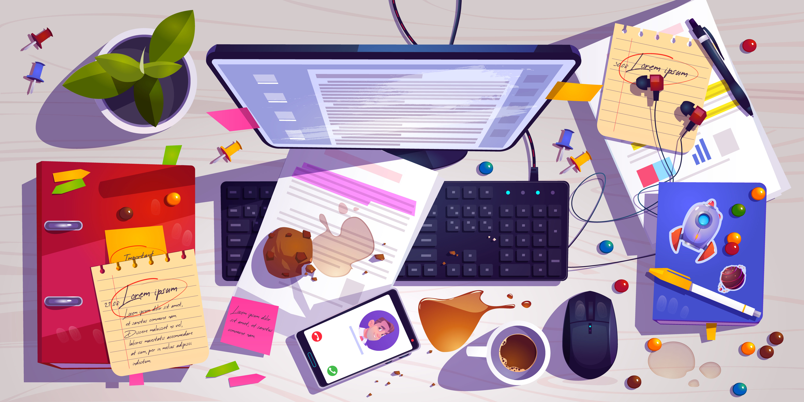

🧮
🧭
💬
✉️
🌸
📹
🎵
📊
⚙️
Key Learnings ★
-
•
Observation
-
•
Understanding human psychology
mental models!
-
•
AssumptionProblem identification -
•
Putting the customer viewpoint into consideration
-
•
Even the simplest solutions can make a huge difference
* iterate iterate iterate!
Key Learnings
-
•
Decision making ability
- • Presentation matters ⤳ critical!
-
•
Trusting the process is key rather than jumping to outcomes
- • Feedback prevents frustration looping back
-
•
People don’t want to think, guide the eye
- • Simple to use means complex to build
Design Philosophy & Skills:
- ✦ Dedicated & Disciplined
- ✦ Intellectually Curious
- ✦ Highly Adaptable
- ✦ High Project Capacity
- ✦ Strong Academic Foundation
— Aditya (Interaction Designer)
ADITYA PANDYA
CONFIDENTIAL
Experiences
Insights & Project Narrative
TOP SECRET
Click folder to open the report ➔
SECTION 01
Page 1
Academic Foundations
A strong design report starts with the foundation — where learning, research and structure shape each creative decision.
Anant National University
Ahmedabad, India
B.Des in Interaction Design — Minor in Graphic Design
- Grounded in spatial interaction systems, motion-led interfaces, and product strategy.
- Led design thinking sessions, workshops, and collaborative problem solving.
SECTION 02
Page 2
Professional Experience
This section highlights practical work context, project ownership, and the types of systems I’ve built.
Fluxusers Studioz
Co-founder & Interaction Lead
Crafting tailored websites, web apps, and brand systems.
- Owned end-to-end design from concept to launch,including motion systems and elements
- Built responsive interfaces with a focus on clarity, rhythm, and usability.
SECTION 03
Page 3
Design Thinking
The process is the core of every report: insight, hypothesis, prototype, test, iterate.
Discovery
Researching context, users, and patterns to frame design opportunities.
Ideation
Exploring concepts with sketches, flows, and interactive prototypes.
Validation
Testing ideas, collecting feedback, and refining with clarity.
Aditya 👋
Interaction Designer
About Me
Hi, I’m Aditya Pandya. I’m an Interaction Design student driven by curiosity, adaptability, and a love for building intuitive digital experiences. Versatile by nature, I thrive on exploring new tools, experimenting with emerging mediums, and designing engaging interactions that just click.
Quick Bio & Status
📍 Ahmedabad, India
🎓 B.Des IxD Student
⚡ Open for Internships & Projects
Let's connect over coffee ☕
Get In Touch
Currently open for summer internships, design roles, and freelance project collaborations!